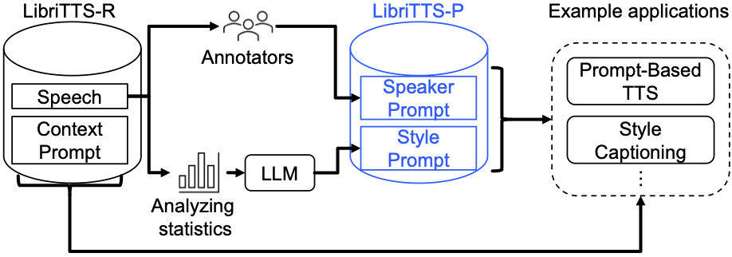

LibriTTS-P: A Corpus with Speaking Style and Speaker Identity Prompts for Style Captioning and Text-to-Speech
anonymous
Anonymous submission to Interspeech 2024
Abstract
We introduce LibriTTS-P, a new corpus based on LibriTTS- R that includes utterance-level descriptions (i.e., prompts) of speaking style and speaker-level prompts of speaker character- istics. We employ a hybrid approach to construct prompt an- notations: (1) manual annotations that capture human percep- tions of speaker characteristics and (2) synthetic annotations on speaking style. Compared to existing English prompt datasets, our corpus provides more diverse prompt annotations for all speakers of LibriTTS-R. Experimental results for prompt-based controllable TTS demonstrate that the TTS model trained with LibriTTS-P achieves higher naturalness than the model using the conventional dataset. Furthermore, the results for style cap- tioning tasks show that the model utilizing LibriTTS-P gener- ates 2.5 times more accurate words than the model using a con- ventional dataset. The URL for our dataset will be provided in the final version of our paper.

Overview of LibriTTS-P and its applications.
Demos
This page consists of three demos: StyleCap [1], PromptTTS++ [2] (PromptSpeech [3] evaluation data), and PromptTTS++ (LibriTTS-P evaluation data).
References
[1] K. Yamauchi, Y. Ijima, Y. Saito, "StyleCap: Automatic Speaking-Style Captioning from Speech Based on Speech and Language Self-supervised Learning Models", in Proc. ICASSP, 2024, (in press).
[2] R. Shimizu, R. Yamamoto, M. Kawamura, Y. Shirahata, H. Doi, T. Komatsu, K. Tachibana, "PromptTTS++: Controlling Speaker Identity in Prompt-Based Text-to-Speech Using Natural Language Descriptions", in Proc. ICASSP, 2024, (in press).
[3] Z. Guo, Y. Leng, Y. Wu, S. Zhao, X. Tan, "Prompttts: Controllable Text-To-Speech With Text Descriptions" in Proc. ICASSP, 2023, pp. 1-5.